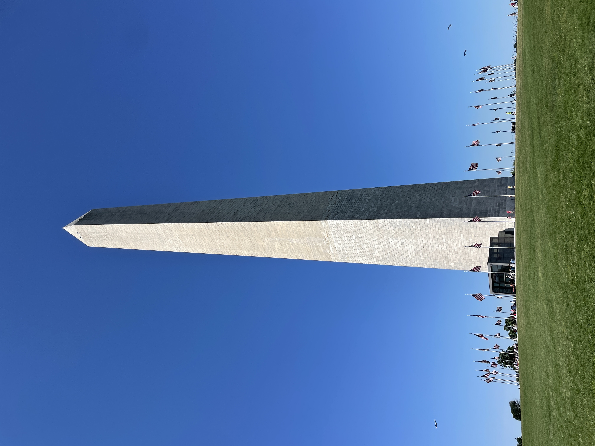
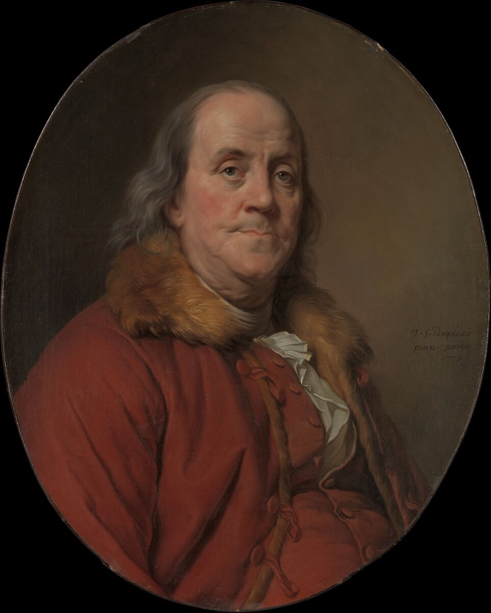

The Masons were sure to control the narrative around their most famous figures, even starting to idolize George Washington as a divine figure. This tradition continues to this day in our history books and monuments.

During the 1700s the public narrative was controlled via the newspapers. These papers were filled with letters from anonymous sources, offering stories or opinions. The Freemasons submitted opinion pieces and fake stories to sway public opinion. The one Freemason who did this the most started contributing anonymous articles at only 12 years old. He operated under pseudonyms like Silence Dogood and Richard Saunders. He is painted in an adjacent room. What are the 3 letters inscribed on the gold frame of his portrait?
